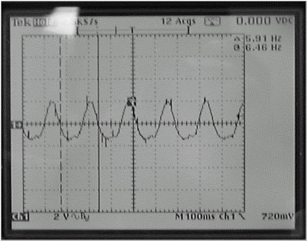

Operating Documentation
Direction 5440000, Rev# 5
Signa HDxt Service Methods
Module Version 1.0, Version Date 4/25/07
Operating Documentation |
| Required Persons | Preliminary Reqs | Procedure | Finalization |
|---|---|---|---|
| 2 | Not Applicable | 30 mins | Not Applicable |
The Dock Motor Speed Procedure is required as part of set-up and calibration. Procedures for opening magnet enclosure covers and adjusting patient dock hardware are provided in case related Dock problems arise. Motor speed is affected by magnetic field effects on the motor, and the moving parts in the patient transport. The dock motor speed cannot be factory preset; it must be adjusted for each individual site. The motor speed is set for an unloaded condition which equates to 360 rpm (or six revolutions/second). The adjustment can be made using the preferred Step Two-man Procedure, or when short handed, using Step One-man Procedure. A DMM is required to verify power is off. The MEPS measurement for the Dock Motor Speed Adjustment requires 1 oscilloscope probe. The SSM differential measurement for the Dock Motor Speed Adjustment requires 2 oscilloscope probes because the Power Supply circuitry is floating.
| Item | Qty | Effectivity | Part# | Manufacturer | |
|---|---|---|---|---|---|
| Man Power Requirements | 2 people | - | - | - | |
| oscilloscope probes | 2 | - | - | - | |
| Digital Multi-Meter (DMM) | 1 | - | - | - | |
| ||||
| Strong Magnetic Field! | ||||
| Ferrous materials can become dangerous projectiles in the presence of the magnetic field Produced by the Signa Magnet. | ||||
| Do not Bring any ferromagnetic tools or equipment into the magnet room. |
| ||||
| SHOCK HAZARD!! | ||||
| THE SSM IPS (Integrated Power Supply) ASSEMBLY CIRCUITRY IS FLOATING. | ||||
| DO NOT REFERENCE TEST EQUIPMENT TO GROUND CHASSIS OR ANY GROUND TEST POINTS. |
| Condition | Reference | Effectivity |
|---|---|---|
Upgraded HDx system with SSM. HDx systems with the PHPS do not have this adjustment. | - | - |
| ||||
| The system must be setup for a Body mode protocol and the [Prepare to Scan] softkey selected initially. Pulse Body mode once at TG of 0. Do Not open the SSM top cover for 1 minute (after the system has transitioned from Head, Surface, M/C or MNS mode to Body mode). Failure to follow these directions has resulted in the Dynamic Disable IGBT Circuitry (Direct Drive, Body1, Body2) overheating and shorting resulting in CPD replacement. | ||||
Setup a Body mode protocol and select [Prepare to Scan] soft key. Wait 5 minutes before opening the SSM cover. See Notice statement for detail.
Dock the patient transport. Remove head coil carriage from the patient table if necessary. Lower table to fully down position using the foot pedals at either end of the patient transport.
Remove power to dock. Refer to appropriate OSHA LOCKOUT/TAGOUT REQUIREMENTS.
RF/Pen Cabinet: Lock out and tag out circuit breaker MR1 A14 CB6 at rear of RF/Pen Cabinet.
RF/Pen II and RF/PDU or ACGD Cabinet: Lock out and tag out circuit breaker MR1 A20 CB4 at rear of SSM in cabinet.
Verify that voltage between Dock and Dock RTN is 0 VDC using a Digital Multi-Meter:
RF/Pen Cabinet: Locate the MEPS Module at the bottom of the Cabinet. Locate the test point strip which is at the center of the rear panel of the MEPS module. Connect the Digital Multi-Meter.
Locate the SSM at the bottom of the RF Accessories Cabinet. Locate the test point strip which is at the center of the rear panel of the SSM. Connect the DMM:
Remove the four screws and four #10 flat washers securing the MEPS or SSM module to the cabinet.
Slide the MEPS or SSM module out the front of the cabinet.
RF/Pen Cabinet: Loosen the three 4-40 captive screws on the top cover of the MEPS module. Open and remove the lid. Locate the High Current power supply board, which contains the voltage potentiometer R38.
RF/Pen Cabinet: Pull out the RFSC and loosen the captive screws on the top cover of the SSM to gain access to the white plunger switch. Open the lid. Pull the High Voltage enable plunger switch to the UP position.
RF/Pen II, RF/PDU and RF Accessories Cabinets: Do not disable the HV at the front of the SSM
RF/Pen II Cabinet and RF/PDU Cabinet: Remove the twelve 4-40 screws on the top cover of the SSM. Open the lid. Locate the Dock/Light power supply board, which contains the voltage potentiometer R80.
RF Accessories Cabinet: Remove the twelve 4-40 screws on the top cover of the SSM. Open the lid. Locate the Dock/Light power supply board, which contains the voltage potentiometer R80.
RF/Pen Cabinet: Connect Channel 1 oscilloscope lead to TP3 (Dock 38.5V). Connect Channel 1 oscilloscope ground reference lead to TP1 or TP4 or TP7 (SGND). Set channel 1 trace to zero reference graticle on the oscilloscope display. Adjust time/div to approximately 100 mS/div. Set oscilloscope channels to AC Coupling.
RF/Pen II and RF/PDU Cabinet: Connect Channel 1 oscilloscope lead to TP3 (38.5V, Dock). Connect Channel 2 oscilloscope lead to TP4 (DOCK-RTN). Connect both oscilloscope lead grounds together. Isolate ground leads with tape as required to ensure no contact with electrical circuitry. Set both channels to ground reference. Set Channel 2 to add/invert. Adjust both ground leads to the same zero reference graticle on the oscilloscope display. Adjust time/div to approximately 100 mS/div. Set oscilloscope channels to AC Coupling.
| ||||
| SHOCK HAZARD!! | ||||
| THE SSM IPS (Integrated Power Supply) ASSEMBLY CIRCUITRY IS FLOATING. | ||||
| DO NOT REFERENCE TEST EQUIPMENT TO GROUND CHASSIS OR ANY GROUND TEST POINTS. |
Lower Table to the full down position using the Table Down pedal.
RF/Pen Cabinet: Switch on circuit breaker MR1 A14 CB6.
RF/Pen II and RF/PDU or RF Accessories Cabinet: Switch on circuit breaker MR1 A20 CB4.
| NOTE: | Only perform this procedure with the system setup for a Body mode protocol. Refer to the Notice message for details. |
Monitor output at test points while a second person presses the Table Up pedal on the dock, raising the table. Only perform this procedure with the system in the Body mode or the Direct Drive IGBT circuitry may short.
| NOTE: | This measurement is valid only during the period of table top upward motion. Once the table top reaches the maximum height, dock motor will be too loaded to provide accurate adjustment measurement. |
RF/Pen Cabinet: Adjust R38 to obtain a voltage waveform of six pulses per second ± 1/4 pulse per second (Illustration 1 shows 5 and ¾ pulses/second). See Note above.
RF/Pen II Cabinet and RF/PDU Cabinet: Adjust R80 to obtain a voltage waveform of six pulses per second ± 1/4 pulse per second (Illustration 1 shows 5 and ¾ pulses/second). See Note above.
Illustration 1: 6 PULSES PER SECOND OSCILLOSCOPE DISPLAY

Repeat this procedure as necessary or whenever the Dock circuit board is replaced.
| ||||
| The system must be setup for a Body mode protocol and the [Prepare to Scan] softkey selected initially. Pulse Body mode once at TG of 0. Do Not open the SSM top cover for 1 minute (after the system has transitioned from Head, Surface, M/C or MNS mode to Body mode). Failure to follow these directions has resulted in the Dynamic Disable IGBT Circuitry (Direct Drive, Body1, Body2) overheating and shorting resulting in CPD replacement. | ||||
Setup a Body mode protocol and select [Prepare to Scan] soft key. Wait 5 minutes before opening the SSM cover. See Notice for detail.
Remove power to dock. Refer to appropriate OSHA LOCKOUT/TAGOUT REQUIREMENTS.
RF/Pen Cabinet: Lock out and tag out circuit breaker MR1 A14 CB6 at rear of RF/Pen Cabinet.
RF/Pen II and RF/PDU Cabinet: Lock out and tag out circuit breaker MR1 A20 CB4 at rear of SSM in cabinet.
RF Accessories Cabinet: Lock out and tag out circuit breaker MR1 A20 CB4 at rear of SSM in cabinet.
Verify that voltage between Dock and Dock RTN is 0 VDC using a Digital Multi-Meter:
RF/Pen Cabinet: Locate the MEPS Module at the bottom of the Cabinet. Locate the test point strip which is at the center of the rear panel of the MEPS module. Connect the DMM.
For RF/Pen II and RF/PDU Cabinet: Locate the SSM at the bottom of the Cabinet. Locate the test point strip which is at the center of the rear panel of the SSM. Connect the Digital Volt-Meter.
Locate the SSM at the bottom of the RF Accessories Cabinet. Locate the test point strip which is at the center of the rear panel of the SSM. Connect the Digital Multi-Meter.
Remove the four screws and four #10 flat washers securing the MEPS or SSM module to the cabinet. Slide the MEPS or SSM module out the front of the cabinet.
RF/Pen Cabinet: Loosen the three 4-40 captive screws on the top cover of the MEPS module. Open and remove the lid. Locate the High Current power supply board, which contains the voltage potentiometer R38.
RF/Pen Cabinet: Pull out the RFSC and loosen the captive screws on the top cover of the SSM to gain access to the white plunger switch. Open the lid. Pull the High Voltage enable plunger switch to the UP position.
RF/Pen II, RF/PDU and RF Accessories Cabinets: Do not disable the HV at the front of the SSM
RF/Pen II Cabinet and RF/PDU Cabinet: Remove the twelve 4-40 screws on the top cover of the SSM. Open the lid. Locate the Dock/Light power supply board, which contains the voltage potentiometer R80.
RF/Pen Cabinet: Connect Channel 1 oscilloscope lead to TP3 (Dock 38.5V). Connect Channel 1 oscilloscope ground reference lead to TP1 or TP4 or TP7 (SGND). Set channel 1 trace to zero reference graticle on the oscilloscope display. Adjust time/div to approximately 100 mS/div. Set oscilloscope channels to AC Coupling.
RF/Pen II and RF/PDU or RF Accessories Cabinet: Connect Channel 1 oscilloscope lead to TP3 (+38.5V, Dock). Connect Channel 2 oscilloscope lead to TP4 (DOCK-RTN). Connect both oscilloscope lead grounds together. Isolate ground leads with tape as required to ensure no contact with electrical circuitry. Set both channels to ground reference. Set Channel 2 to add/invert. Adjust both ground leads to the same zero reference graticle on the oscilloscope display. Adjust time/div to approximately 100 mS/div. Set oscilloscope channels to AC Coupling.
| ||||
| SHOCK HAZARD!! | ||||
| THE SSM IPS (Integrated Power Supply) ASSEMBLY CIRCUITRY IS FLOATING. | ||||
| DO NOT REFERENCE TEST EQUIPMENT TO GROUND CHASSIS OR ANY GROUND TEST POINTS. |
Lower Table to the full down position using the Table Down pedal.
Place a weight on the Table Up and Table Down foot pedals on the Dock. This weighting of both pedals will ensure that the table does not top out and pull more current than normal.
RF/Pen Cabinet: Switch on circuit breaker MR1 A14 CB6.
RF/Pen II and RF/PDU or ACGD Cabinet: Switch on circuit breaker MR1 A20 CB4.
| NOTE: | Only perform this procedure with the system setup for a Body mode protocol. Refer to the Notice message for details. |
Monitor output at test points:
RF/Pen Cabinet: Adjust R38 to obtain a voltage waveform of six pulses per second ± 1/4 pulse per second (Illustration 2 shows 5 and ¾ pulses/second). This test setup measurement is valid only for approximately 12 seconds.
RF/Pen II Cabinet and RF/PDU or RF Accessories Cabinet: Adjust R80 to obtain a voltage waveform of six pulses per second ± 1/4 pulse per second (Illustration 2 shows 5 and ¾ pulses/second). This test setup measurement is valid only for approximately 12 seconds.
Illustration 2: 6 PULSES PER SECOND OSCILLOSCOPE DISPLAY

Repeat this procedure as necessary or whenever the Dock circuit board is replaced.
No finalization steps.